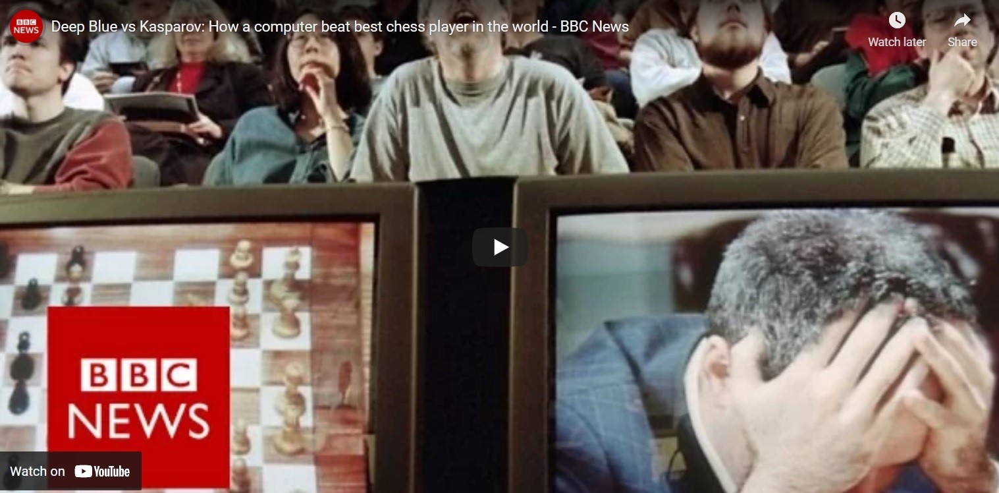

“Chess is the struggle against the error.”
– Johannes Zukertort
Over the one and a half millennia of its existence, chess has made a reputation as one of the most complicated strategy games to ever exist. It has its roots in 7th century India, from where it spread to Persia. When Persia was conquered by the Arabs, the Muslim world popularized the game and later spread it to parts of Southern Europe. Chess continuously evolved until the 15th century, when it reached its current form, and was only slightly changed since.
Until the 1880s, “Romantic chess” was the most common playing style, meaning that the games during these times had an emphasis on quick, tactical manoeuvres instead of strategic planning. The game has undergone multiple other eras such as Scientific, Hypermodern and New Dynamism. During late 19th century, people started hosting modern chess tournaments, such as the first official World Chess Championship held in 1886. FIDE, the organization that currently acts as the governing body of international chess competitions, was established in the 20th century. In 1997, IBM’s supercomputer “Deep Blue”, managed to beat world champion Garry Kasparov in a series of matches. Ever since, computers have only evolved and dominated the game of chess, but they have greatly contributed to the development of chess theory and became a crucial part of the preparation of professional players. Today, the computer analysis used for various chess engines have far surpassed the abilities of any human player and have reached a large audience through free downloadable apps.
